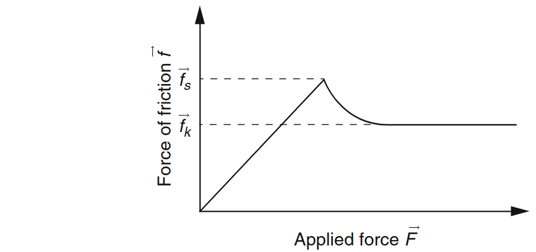
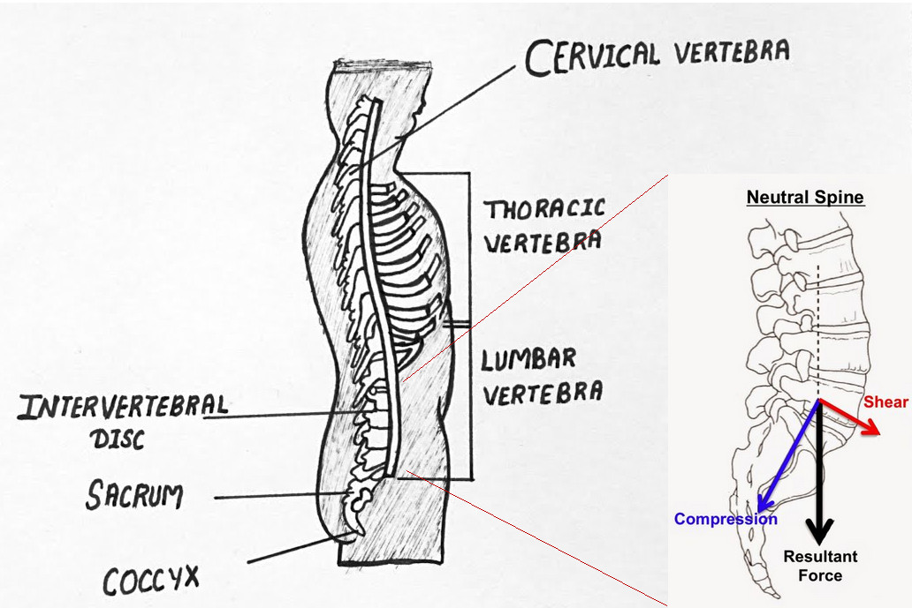
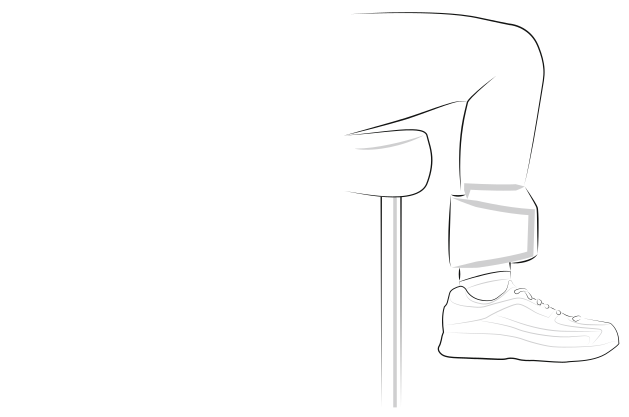
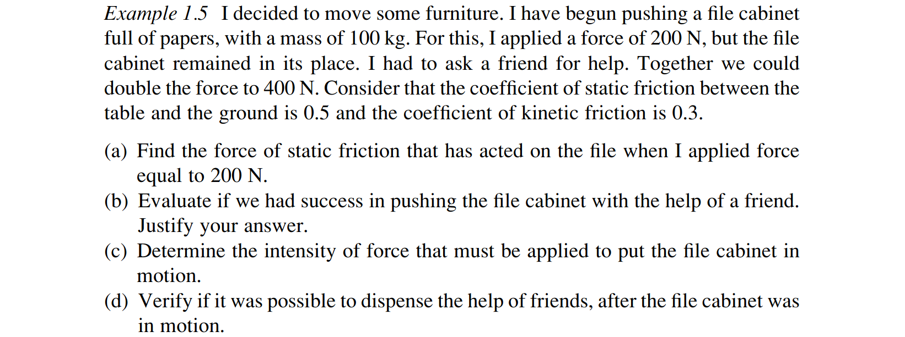
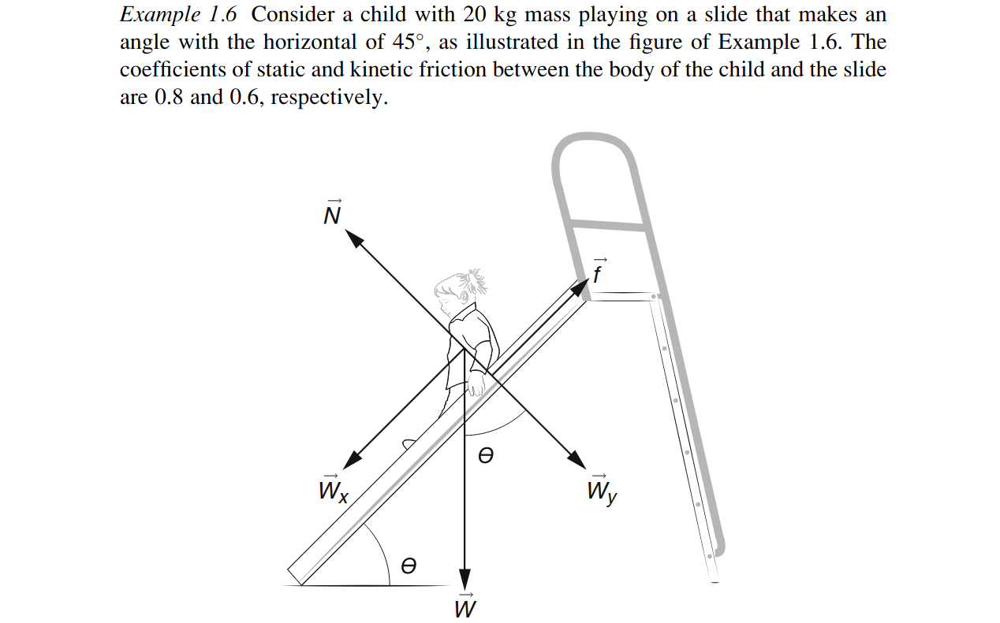

Ask AI:
is a force that appears on contact interfaces between two bodies, but differentiates from the normal component of the reaction force because it is bound to reside in the tangential plane of the contact surface.

The applied force is the component of the external force system resultant on the tangential plane of the interface, and the force of friction is the force that may be produced by the interface. If the applied force is larger than the friction force that may be produced, motion will begin.
\(\mu_s\) the coefficient of static friction \[ \boldsymbol{f}_s = \mu_s \boldsymbol{N} \]
\(\mu_k\) the coefficient of kinetic (dynamic) friction \[ \boldsymbol{f}_k = \mu_k \boldsymbol{N} \]

Discussion: Why do contact forces in a structure get larger as one moves in the direction of gravity?

\(m_{leg} = 3.5\) kg
\(m_{weight}=4.5\) kg
\(m_{shoe}+m_{foot}=1.2\) kg


Ask AI:
By the end of this lecture students should be able to: